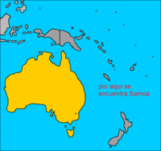

De: La Frikipedia, la enciclopedia extremadamente seria.
De: La Frikipedia, la enciclopedia extremadamente seria. De: La Frikipedia, la enciclopedia extremadamente seria.

|
FRIKIPEDIA QUIERE QUE ESTA DEFINICIÓN
PASE A SER UN ARTÍCULO FRIKIPÉDICO La información contenida en este artículo es una mínima parte de su jugo total, así que ponte los guantes, saca el tupperwere y empieza a exprimir el tema. Si lo haces serás recompensado con una galleta en almíbar y algo más. |
| De la serie Países del planeta tierra: | |||||
| Samoa | |||||
|---|---|---|---|---|---|
| |||||
| Lema: Le Manu Samoae ua malo ona fai o le faiva (se repite 48 veces) | |||||
| Himno: Siva Tau
| |||||
| 
| |||||
| Capital | Isla Número 1 | ||||
| Mayor ciudad | Isla Número 2 | ||||
| Lenguas oficiales | Gritos sin sentido | ||||
| Gobierno | Gordocracia (como en Petoria) | ||||
| Su inmensa persona | Un jugador de rugby | ||||
| Área | unas islas | ||||
| Población | miles de jugadores de rugby y luchadores | ||||
| Moneda | dolar (creo) | ||||
| Zona horaria | la primera | ||||
| Dominio Internet | .tio sam | ||||
| Código telefónico | solo tienen 2 teléfonos
| ||||
| el habitante mas liviano pesa 150 kg. | |||||
La Repúbublica isleña mastodóntica de Samoa, es un país insular conformado por cientos de miles de islas pequeñas esparcidas en Oceanía. éste al ser un país insular, no tiene fronteras conocidas (aunque tienen planes para anexar a la Samoa Americana, y posteriormente conquistar el mundo)
al rededor de los años 1800, un barco proveniente de Indonesia, llevaba consigo un grupo de orangutanes hacia Australia entre los cuales estaba oculto un humano, que se creía un simio (al estilo de Tarzán), cuando a dicho humano, le llegó el verano, precisamente en la época de celo de las hembras de los orangutanes, peleó a muerte contra los machos por el dominio del harem, derrotándolos, consiguiéndose aparear con las hembras, engendrando cerca de 10 hijos, cuando el capitán del barco se dio cuenta de lo que pasaba, decidió abandonar el barco en una isla desértica. Aquellas crías, ganaron la forma del cuerpo de un orangután, y la inteligencia humana.
Pasado unos años, unos nativos maoríes naufragaron, luego de que una ballena les dio un pollazo en la balsa en la que se movilizaban, provocando que dichos nativos se encontraran en la isla, donde sus necesidades sexuales hicieron que se quisieran aparear con aquellas aberraciones lo cual provocó una mutación, la cual hizo que dichos rasgos humanos se fortalecieran, pero siguiendo teniendo el tamaño de un simio.
Como ya se había mencionado, Samoa está en en el culo del mundo en algún lugar del océano pacífico en unas islas esparcidas por el mar, las cuales no pueden ser rastreadas por medio de GPS, y los turistas se pueden ir a tomar por culo, después de perderse o de confundirse de isla.
Autor(es):